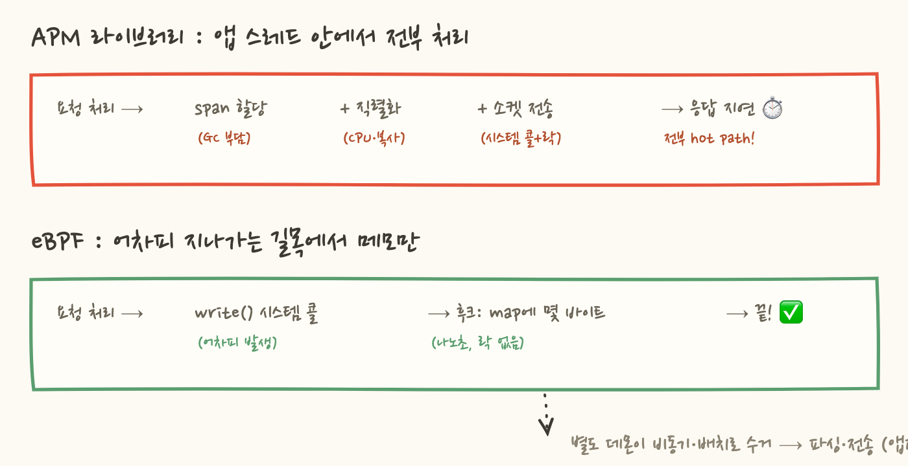
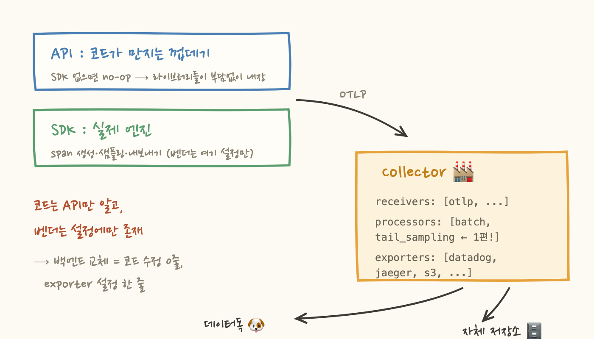
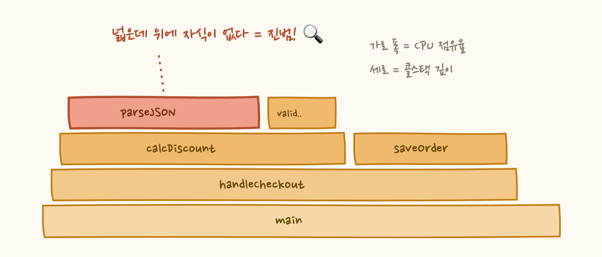

2편. 알람은 언제 울려야 하나 : SLO와 에러 버짓
3편. 수집 기술의 최전선 : eBPF, OpenTelemetry, 프로파일링
모니터링을 하다 보면 이상한 순간이 옵니다. 대시보드는 잘 돌아가는데 청구서가 이해가 안 되는 순간이요. 분명 서버는 몇 대 안 늘었는데 데이터독 커스텀 메트릭 비용이 몇 배로 뛰어 있고, APM 트레이스는 잔뜩 쌓여 있는데 정작 어제 장애의 트레이스는 없습니다.
이 두 사건은 사실 같은 질문에서 나옵니다. "관측 데이터의 비용은 어디서 생기고, 우리는 무엇을 버려야 하는가?" 이 글에서는 그 답의 절반인 카디널리티(메트릭의 비용 구조)와 샘플링(트레이스의 비용 구조)을 다룹니다.
1. 시계열: 메트릭 저장의 진짜 단위
모든 이야기의 출발점은 이겁니다. 메트릭 시스템(데이터독, Prometheus 등)의 저장 단위는 "메트릭"이 아니라 시계열(time series)이에요. 시계열 하나 = 메트릭 이름 + 태그 조합 하나입니다.
메트릭 이름은 api.latency 하나지만, 태그 값 조합마다 독립된 시계열이 하나씩 만들어지고 각각 따로 저장·인덱싱됩니다. 대시보드 그래프에서 선 하나 = 시계열 하나라고 보면 정확해요.

시계열 개수는 각 태그 값 개수의 곱으로 늘어납니다. endpoint 50개 × status 10개 × env 3개 = 1,500개. 여기까진 아무 문제 없습니다. 문제는 다음 장에서 시작돼요.
2. 카디널리티 폭발: 태그 하나가 청구서를 태운다
어느 날 누군가 디버깅하려고 user_id를 태그로 붙입니다. 사용자가 100만 명이라면?

1,500 × 1,000,000 = 15억 개의 시계열. 이게 카디널리티 폭발입니다. 무서운 점이 두 가지예요. 첫째, 코드 한 줄로 일어납니다. 둘째, 트래픽이 아니라 태그 값의 다양성에 비례합니다. 요청이 하루 10건이어도 user_id가 매번 다르면 시계열은 계속 늘어나요.
왜 메트릭 시스템은 이걸 못 버틸까요? 설계 전제가 "시계열 수는 적고, 각 시계열에 값이 계속 쌓인다"이기 때문입니다. 시계열마다 인메모리 인덱스를 유지하는데, 시계열이 수십억 개가 되면 인덱스가 메모리를 다 먹고 쿼리가 죽어요. Prometheus가 OOM으로 쓰러지는 단골 원인이 이거고요.
비용 관점에선 더 직접적입니다. 데이터독 커스텀 메트릭 과금은 시계열 개수 기준이거든요. "커스텀 메트릭 100개당 얼마"의 100개는 메트릭 이름이 아니라 태그 조합 수입니다. user_id 태그 하나로 청구서가 수십 배 뛰는 사고, 실제로 흔합니다.
3. 그런데 로그와 트레이스는 왜 괜찮을까
저장 모델이 다르기 때문입니다. 로그와 트레이스는 시계열이 아니라 개별 이벤트(레코드)로 저장돼요. 이벤트 하나에 필드가 200개 있고 user_id가 들어있어도 그냥 레코드 한 줄입니다. 새 user_id가 와도 "새 시계열 생성"이 아니라 "한 줄 추가"일 뿐이죠.

정리하면 이렇게 됩니다. 메트릭은 사전 집계된 숫자라 저장·쿼리가 극도로 싸고 빠르지만 카디널리티에 치명적으로 약하고, 이벤트는 카디널리티가 무제한이지만 볼륨 비용이 크고 쿼리가 상대적으로 무겁습니다.
여기서 유명한 논쟁이 나옵니다. Honeycomb 진영의 주장은 이래요. "디버깅에 제일 유용한 게 바로 카디널리티 높은 필드다(user_id 없이 '누가 겪었는지'를 어떻게 찾나). 그런데 메트릭은 구조적으로 그걸 못 담는다. 그러니 요청당 하나의 넓은 이벤트(wide event)를 남기고 쿼리 시점에 집계하자." 반론은 볼륨 비용과 대시보드 효율입니다. 실무 합의는 대체로: 집계로 충분한 것(전체 에러율, p95)은 메트릭으로, "누가/어떤 요청이"를 물어야 하는 건 이벤트로.
• ID류 무한 값은 태그가 아니라 로그·트레이스 속성으로 (과금 구조가 다름)
• URL은 raw가 아니라
/users/{id}처럼 템플릿 경로로 태깅• Metrics without Limits로 수집은 다 하되 인덱싱할 태그만 선별
• 커스텀 메트릭 사용량 대시보드를 주기적으로 확인 (폭발 조기 감지)
4. 샘플링: "뭘 버릴까"가 아니라 "언제 정할까"
이벤트 진영의 숙제는 볼륨입니다. APM을 켜면 모든 요청이 트레이스를 만들어요. 초당 1만 요청이면 하루 수억 건. 그런데 냉정하게 보면 대부분은 서로 똑같습니다. 성공한 200ms짜리 /login 100만 개 중 99만 9천 개는 정보 가치가 없어요. 그래서 일부만 남기는 게 샘플링인데, 핵심 질문은 "몇 %를 남기냐"가 아니라 "남길지 말지를 언제 결정하냐"입니다.
Head-based: 들어올 때 동전 던지기
요청이 시스템에 들어오는 순간 결정합니다. 첫 서비스가 주사위를 굴리고, 그 결정을 트레이스 헤더에 실어 하위 서비스로 전파해요. 단순하고 싸지만 치명적 약점이 있습니다. 결정 시점에 아는 게 없어요. 이 요청이 에러가 날지, 30초가 걸릴지 모르는 채로 버릴지를 정하니까, 10% 샘플링이면 에러 트레이스도 90% 확률로 버려집니다. 장애 조사하러 갔는데 정작 문제의 트레이스가 없는 최악의 상황이 여기서 나와요.
Tail-based: 끝나고 나서 고르기
결정을 트레이스가 완결된 후로 미룹니다. 모든 span을 수집 계층으로 보내 몇 초간 버퍼링하고, 완성된 전체를 보고 규칙을 적용해요. 에러면 100% 저장, p99보다 느리면 100% 저장, 평범한 성공은 1%만.

"에러난 요청만 골라 저장"이 tail-based에서만 가능한 이유가 명확하죠. 에러 여부는 요청이 끝나야만 알 수 있는 정보니까요. 대신 어차피 버릴 트레이스까지 일단 수집 계층으로 다 보내야 하고, 흩어진 span을 trace ID별로 한곳에 모으는 라우팅이 필요해서 인프라가 복잡해집니다.
5. 데이터독의 절충: 수집과 인덱싱의 분리
데이터독은 사실상 하이브리드입니다. 청구서 이해에 직결되니 구조를 알아둘 가치가 있어요.
기본 계측(dd-trace)은 head-based로 동작하되 Agent가 샘플링률을 자동 조절합니다. 진짜 핵심은 과금 구조인데, 데이터독은 수집(ingestion)과 인덱싱(indexing)을 분리해서 트레이스를 일단 다 받은 다음 Retention Filter로 뭘 남길지 백엔드에서 정합니다. "에러는 다 남겨", "이 서비스는 5%만" 같은 규칙을 UI에서 걸 수 있어요. 사실상 tail-based 선별을 데이터독 백엔드가 대신 해주는 셈이죠. 기본으로 켜진 Intelligent Retention도 있어서 에러·느린 요청·엔드포인트별 대표 샘플은 자동 보존됩니다.
그래서 APM 비용 최적화의 실전 레버는 두 개입니다. 수집량(GB당 과금)과 인덱싱량(저장 트레이스 수)을 따로 튜닝하는 것. 보통 수집은 넉넉히 두고 인덱싱 필터를 좁히는 게 시작점이에요. 자체 구축이라면 OTel Collector의 tailsampling 프로세서가 표준 도구인데, 규모가 커지면 같은 trace ID를 같은 Collector로 보내는 로드밸런싱이 필요해져서 운영 난이도가 확 올라갑니다.
샘플링의 본질은 "결정을 언제 하느냐"다. 일찍 정하면(head) 싸지만 눈감고 고르는 것이고, 늦게 정하면(tail) 에러만 골라낼 수 있지만 수집 인프라 비용을 낸다. 데이터독은 수집/인덱싱 분리로 이 선택을 백엔드로 넘겨줬다.